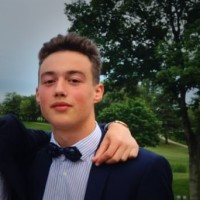
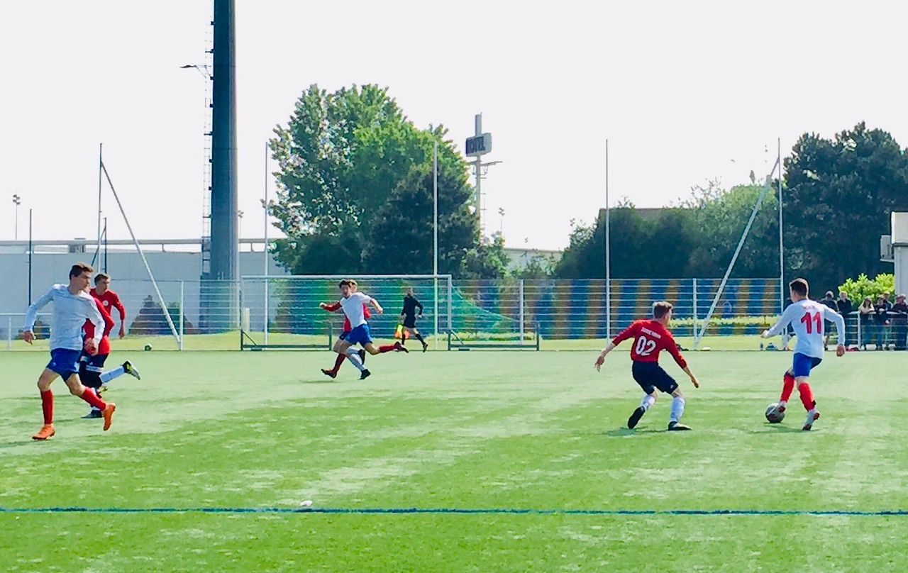

Max's Website
Welcome to my virtual profile! I'm a student in the ESSEC Business School, and I have the dream of travelling in every country in the world. While reading my profile, feel free to check out my spotify profile (and playlists) below!
Put your headset on! :
My Spotify ProfileSports
Since I was 5, I have always been practicing various sports. From boxing to athletics, tennis to football, I have played nearly everything. The only sport I am truly passionate about is soccer, a passion for the sport born with the Ligue 1 club of Marseille.
Languages
I have never lived somewhere else than France, but I speak French, English, Spanish and Arabic, fueling my desire to discover the world and enrich my cultural experience.

Culture
One of my passions is discovering new cultures and engaging with foreign students, and my time at ESSEC has provided me with the perfect opportunity to broaden my horizons.